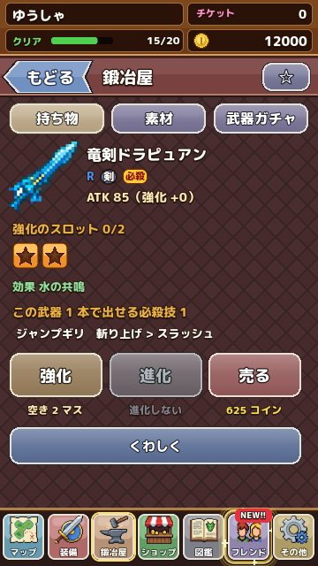

地上の攻略 前半（アーケディア城〜砂漠の遺跡群）
最初の 5 エリアの敵と弱点、中ボス・ボスの戦い方、初回クリアの品と準備のコツ。 更新：2026-11-23
このページの見方
このページでは、地上の旅の最初の 5 エリア（アーケディア城・平原の村・いにしえの洞窟・港町ポトス・砂漠の遺跡群）を順に紹介します。どのエリアも STAGE が 5 つ、STAGE ごとに WAVE が 3 つで、STAGE 4 の最後に中ボス、STAGE 5 の最後にボスが出ます。
敵の表の「間隔」は、その敵が攻撃してくるまでのカウントの基本の数です（敵の上の吹き出しの数字）。出てきた直後は 1〜2 多いことがあります。数字が小さい敵ほど攻撃の回数が多いので、同じ WAVE に何体かいるときは、間隔の短い敵から倒すと受けるダメージを減らせます。中ボスとして出るときは、雑魚のときより間隔が 1 短くなります。
弱点の武器の種類で攻撃すると、ダメージは 1.5 倍、スタン値は 5 倍です。弱点でない種類ではスタン値が 0.4 倍に下がるので、スタンさせたいなら弱点の種類がほぼ必須です。属性が有利だとダメージが 2 倍（炎→風、水→炎、風→水、光⇔闇）、無属性の武器で無属性の敵を攻撃したときは 1.5 倍になります。くわしくは弱点と属性のページを見てください。

アーケディア城
王さまのいるお城で、冒険のスタート地点です。城の中ではチュートリアルと、倒れないカカシを相手にしたガードの練習がいつでもできます。STAGE はどの WAVE も敵が 1 体ずつしか出てこないので、1 対 1 でガードのタイミングを覚えるのにぴったりです。金色のラッキーキャラもここには出ません。
| 敵 | 種族 | 属性 | 弱い武器 | 間隔 |
|---|---|---|---|---|
| ゴブリン | ゴブリン | 無 | 剣 | 3 |
| クワガタおやじ | おやじ | 無 | 槌 | 3 |
| ファビット | ファビット | 無 | 槍 | 2 |
| ミニファビ | ファビット | 無 | 槍 | 2 |
| カブリモノ | カブリモノ | 無 | 槍 | 4 |
中ボス：王宮騎士オージーン（人間・光・槌が弱点）
中ボスとして出るオージーンは「ボスの盾」を持っていて、こちらのスキルのヒットの 40% を盾で受け、そのヒットのダメージを 70% 減らします。ただし、スタンしている間・しびれている間と、こちらの必殺技は防げません。槌でスタンさせてから一気に攻めるのが近道です。属性は光なので、闇の武器ならダメージが 2 倍になります。
ボス：龍騎士マーゴス（人間・無・槌が弱点）
マーゴスは「ST 吸収」の力を持ち、ジャストガードやミラクルガード以外で攻撃を受けると ST を 3 減らされます。ST が減るとスキルが使えなくなるので、ここでジャスト以上をねらう練習をしておくと、後半のボスでも役に立ちます。必殺技は「ドラゴンダイブ」。吹き出しが赤くなったら必殺技の合図です。属性は無なので、無属性の槌がいちばん効きます。
おすすめと初回クリアの品
中ボスとボスがどちらも槌に弱いので、槌を 1 本は用意しましょう。雑魚には槍が弱点の敵が多く、剣は最初の武器のミナライノケンで間に合います。STAGE 5 を初めてクリアするとナイトランス（N・無属性の槍。最大 HP が 110% になるナイトハート）がもらえ、次の平原の村でさっそく活躍します。

平原の村
のどかな草原の村で、初めてショップと鍛冶屋が使えるようになります。ガチャは 1 回 150 コインと安く、まずはここで武器の種類をそろえるのが序盤の定番です。雑魚はほとんどが風の属性なので、炎の武器があればダメージ 2 倍で一気に楽になります。
| 敵 | 種族 | 属性 | 弱い武器 | 間隔 |
|---|---|---|---|---|
| モブリン | ゴブリン | 風 | 剣 | 3 |
| くさっこ | プランこ | 風 | 剣 | 4 |
| かしわもち | ファビット | 風 | 槍 | 2 |
| 盆栽おやじ | おやじ | 風 | 槌 | 3 |
| アフロカブリ | カブリモノ | 風 | 槍 | 4 |
中ボス：ワイルドウルフ（ケモノ・無・槍が弱点）
ケモノは攻撃の間隔が短い種族で、中ボスのワイルドウルフは 2 カウントごとに攻撃してきます。攻撃力も高めなので、のんびり殴っていると HP がどんどん減ります。槍でスタンを取り、スタン中に攻撃を集めるのが安全です。お供の雑魚がいるときは、間隔 2 のかしわもちを先に片づけると楽になります。
ボス：翼龍ドラゴス（ドラゴン・無・槍が弱点）
序盤の大きな山場です。ほかの序盤のボスより手ごわく作られていて、必殺技の「ウイングガスト」は、ガードしそこねると大きく HP を持っていかれます。赤い吹き出しが出たら、ほかの操作より先にガードの準備をしましょう。弱点は槍、属性は無なので、アーケディア城でもらった無属性の槍・ナイトランスがぴったりです。
おすすめと初回クリアの品
槍を 2 本と、雑魚用に炎の武器があると理想的です。STAGE 5 を初めてクリアするとモグランシールド（R の盾。洞窟の景色の戦闘でガードしたダメージを、さらに 30% 減らす「洞窟の加護」）がもらえます。次のいにしえの洞窟をはじめ、地上には洞窟の景色のエリアが 6 つあるので、長く使える盾です。

いにしえの洞窟
ゴーレムやカメカメが住む古い洞窟です。出てくる敵の多くは攻撃の間隔が 4 と長めですが、ゴーレムは HP が種族の中でいちばん多く、カメカメもそれに次いで硬いので、弱点を外すと戦いが長引きます。このエリアは槌があるかどうかで難しさがまったく変わります。
| 敵 | 種族 | 属性 | 弱い武器 | 間隔 |
|---|---|---|---|---|
| ミニゴーレム | ゴーレム | 無 | 槌 | 4 |
| どろっこ | プランこ | 無 | 剣 | 4 |
| カメカメ | カメカメ | 無 | 槌 | 4 |
| ゴースト | ゴースト | 無 | 剣 | 3 |
| プチドラ | ドラゴン | 無 | 槍 | 3 |
中ボス：古代ゴーレム（ゴーレム・風・槌が弱点）
雑魚の中ではいちばんの強さを元にした中ボスで、HP がたっぷりあります。攻撃の間隔は 4 とゆっくりなので、ガードを確実に決めながら槌でスタンを重ねていきましょう。属性は風なので、炎の槌なら 2 倍のダメージです。
ボス：鈍龍タトルノドン（ドラゴン・風・槌が弱点）
カメのような甲羅を持つ竜で、必殺技は地面を揺らす「グランドスラム」。中ボスと同じく風の属性で槌が弱点なので、中ボス用に用意した炎の槌がそのまま使えます。平原の村のボスで手に入れたモグランシールドは、この洞窟の景色で効果を発揮します。
おすすめと初回クリアの品
槌を 2 本（できれば炎の属性）と、ゴースト・どろっこ用の剣。STAGE 5 を初めてクリアすると大地槌バンガイア（R・風・槌。風の武器で有利な属性の敵、つまり水の敵を攻撃すると威力がさらに 130% になる「風ブースト」）がもらえます。次の港町ポトスは水の敵ばかりで、槌が弱点の敵もいるので、すぐに使えます。
港町ポトス
灯台の見える港町で、2 つめのショップがあります。ガチャは 1 回 500 コインで、R が 20% 出るようになります。出てくる敵はすべて水の属性なので、風の武器ならどの敵にも 2 倍のダメージが入ります。
| 敵 | 種族 | 属性 | 弱い武器 | 間隔 |
|---|---|---|---|---|
| シュノーカメ | カメカメ | 水 | 槌 | 4 |
| チャプリン | ゴブリン | 水 | 剣 | 3 |
| うきわおやじ | おやじ | 水 | 槌 | 3 |
| みずくさっこ | プランこ | 水 | 剣 | 4 |
| みずふうせん | ファビット | 水 | 槍 | 2 |
中ボス：マーメイド（マーメイド・水・剣が弱点）
マーメイドは攻撃の間隔 3 の中ボスです。剣が弱点なので、風の剣があれば理想です。お供にみずふうせんがいたら、間隔 2 で手数が多いので先に倒しましょう。
ボス：海龍オシャルシアス（ドラゴン・水・槍が弱点）
必殺技の「マリンブラスト」は、水の光線と大きなしぶきが飛んでくる大技です。弱点は槍なので、風の槍が最適です。風の槍がなくても、ナイトランスのような槍でスタンを取り、スタン中に大地槌バンガイアで殴る、という組み合わせでも十分戦えます。
おすすめと初回クリアの品
風の武器を剣・槍・槌でそろえられると、このエリアはとても楽です。STAGE 5 を初めてクリアすると竜剣ドラピュアン（R・水・剣。水の武器で攻撃すると威力 110% になる「水の共鳴」）がもらえます。次の砂漠の遺跡群は炎の敵ばかりで、ボスも剣が弱点なので、この剣が主役になります。なお、ここまでのエリアでは、落ちる品は R までです。

砂漠の遺跡群
熱い砂に埋もれた遺跡で、出てくる敵はすべて炎の属性です。水の武器ならどの敵にも 2 倍。さらに剣が弱点の敵が 3 種類いて、ボスも剣が弱点なので、水の剣が 1 本あるだけで攻略がぐっと楽になります。このエリアから、落ちる品に SR がまじり始めます。
| 敵 | 種族 | 属性 | 弱い武器 | 間隔 |
|---|---|---|---|---|
| カメゴン | カメカメ | 炎 | 槌 | 4 |
| モエリン | ゴブリン | 炎 | 剣 | 3 |
| もえっこ | プランこ | 炎 | 剣 | 4 |
| モエカブリ | カブリモノ | 炎 | 槍 | 4 |
| 熱血ゴースト | ゴースト | 炎 | 剣 | 3 |
中ボス：こげゴーレム（ゴーレム・炎・槌が弱点）
ゴーレムなので硬く、攻撃の間隔は 4 です。水の槌があれば理想ですが、なければ大地槌バンガイアのような槌でスタンを取ることを優先しましょう。スタン中の敵への攻撃は必ず会心になり、1 ヒットごとに ST も 2 回復します。
ボス：熱龍マグードワイバル（ドラゴン・炎・剣が弱点）
必殺技は空から溶岩を降らせる「マグマレイン」。前のエリアでもらった竜剣ドラピュアンは、水の属性で 2 倍、剣が弱点で 1.5 倍、さらに水の共鳴で 110% と、このボスのためにあるような 1 本です。ここまでのボスより HP も攻撃力も上がっているので、ガードのたびに ST を回復できるジャストガードを意識しましょう。
おすすめと初回クリアの品
水の剣を主役に、カメゴン用の槌とモエカブリ用の槍を入れておくと安定します。STAGE 5 を初めてクリアするとドラゴニルランス（SR・炎・槍。ドラゴンへの攻撃が 150% になる「ドラキラー」）がもらえます。次のオアシスのボスは風の属性で槍が弱点の竜なので、炎・槍・ドラキラーの 3 つが全部かみ合います。続きは地上の攻略 中盤へ。